Background Lore Index - In the galaxy of Elite Dangerous there are the Galnet News posts that give us insight into the world around us. In addition to the main story played out in front of us via those articles, Elite Dangerous has a rich background story that pilots can stumble across through various methods including trilateration through listening...
Background Lore Index - In the galaxy of Elite Dangerous there are the Galnet News posts that give us insight into the world around us. In addition to the main story played out in front of us via those articles, Elite Dangerous has a rich background story that pilots can stumble across through various methods including trilateration through listening...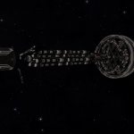
Generation Ship: Achlys - Achlys is an abandoned Generation Ship that can be found in the HIP 114458 system, orbiting body A 2.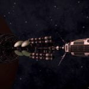
Generation Ship: Artemis - Artemis is an abandoned Generation Ship that can be found in the Mu Cassiopeia system, orbiting body C 1.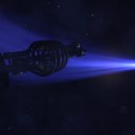
Generation Ship: Atlas - Atlas is an abandoned Generation Ship that can be found in the Charick Drift system, orbiting body A.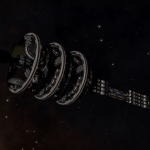
Generation Ship: Demeter - Demeter is an abandoned generation ship that can be found in the Mizuchi system, orbiting body 2.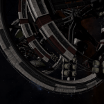
Generation Ship: Epimetheus - Epimetheus is is an abandoned Generation Ship that can be found in the HR 2351 system, orbiting body 4.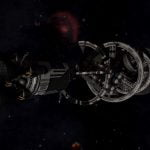
Generation Ship: Hyperion - Hyperion is an abandoned Generation Ship that can be found in the Lalande 2966 system, 8,341 Ls away from the Main Star, in the direction of the Yemaki system.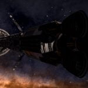
Generation Ship: Lycaon - Lycaon is an abandoned Generation Ship that can be found in the Alaunus system, 30,189 Ls away from the Main star, in the direction of the Horae system.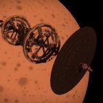
Generation Ship: Odysseus - Odysseus is an abandoned Generation Ship that can be found in the Ross 859 system, in very low orbit of body B 1.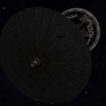
Generation Ship: Phanes - Phanes is an abandoned Generation Ship that can be found in the Cephei Sector NX-U b2-0 system, orbiting body B 5.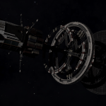
Generation Ship: Phobos - Phobos is an abandoned Generation Ship that can be found in the Coelachi system, 3,363 Ls away from the Main Star, in the direction of the HIP 10229 system.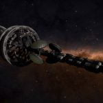
Generation Ship: Pleione - Pleione is an abandoned Generation Ship that can be found in the Hez Ur system, 8,266 Ls away from the Main Star, in the direction of the Teuten system.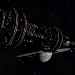
Generation Ship: Spear of Hope - Spear of Hope is an abandoned Generation Ship that can be found in the HIP 21654 system, orbiting body 1.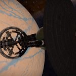
Generation Ship: Thetis - Thetis is an abandoned Generation Ship that can be found in the Nefertem system, orbiting body 6 a.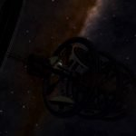
Generation Ship: Venusian - Venusian is an abandoned Generation Ship that can be found in the Kitae system, 2,532 Ls away from the Main star, in the direction of the Zephyrus system.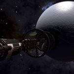
Lazarus Expedition - The Lazarus is an abandoned generation ship that can be found in the Virudnir system, orbiting body 6.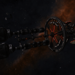
The Golconda - The Golconda is a Generation Ship that was found in the Upaniklis system, orbiting body B 3. It has since restarted its journey and is no longer present in Upaniklis.